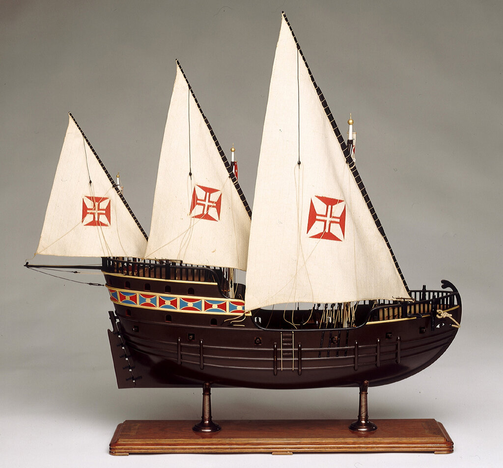
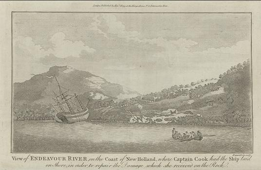
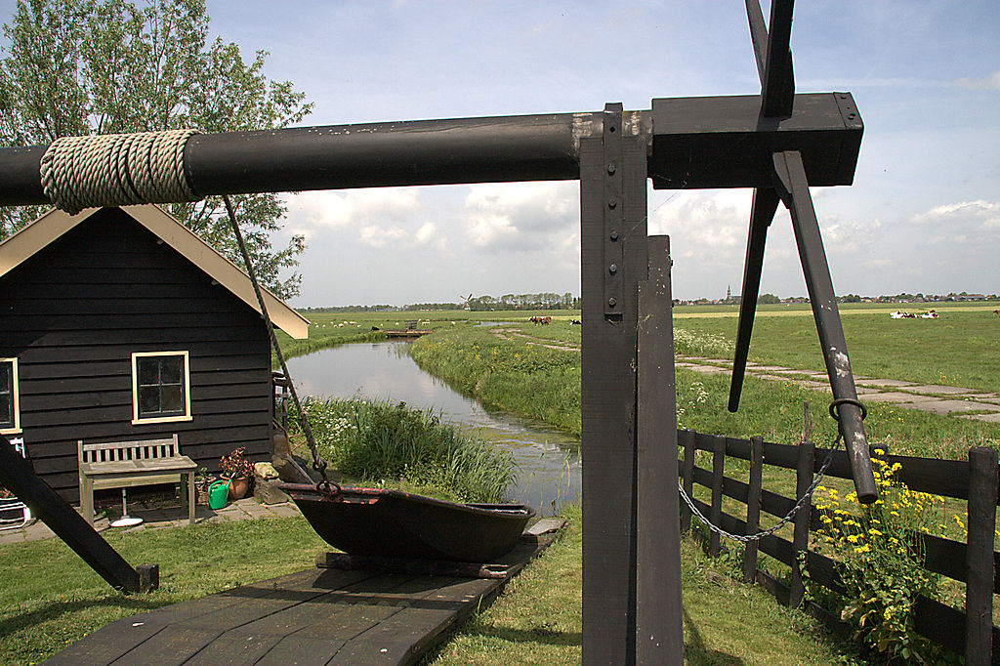
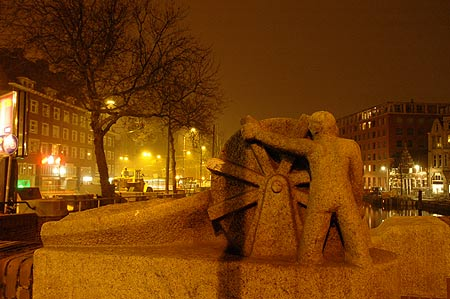

Тяжесть страшная!
Самих себя же
выволакивали
волоком.
В. В. Маяковский. Владимир Ильич Ленин

И Антан Гонсалвиш, поскольку уже загрузил свое судно согласно приказанному ему инфантом, возвратился в Португалию. Нуну Триштан же проследовал далее, дабы исполнить тот приказ, что, как мы сказали ранее, был ему отдан. Однако после отбытия Антана Гонсалвиша, видя, что каравелла требовала починки, он приказал вытащить ее на землю, а там — почистить и исправить, как ей подобало; и он выжидал прилива так, словно пребывал в порту Лиссабона, от каковой его отваги многие приходили в изумление.
Гомиш Ианниш де Зурара, «Хроника достославных событий…», гл. XIII. Пер. Дьяконова О. И.
(1) Попытаемся рассказать вообще о том, для чего какое дерево годится: какое идет на постройку судов (ναυπηγήσῐμος) и какое на постройку дома. Для всех этих нужд используется по преимуществу и в самых важных случаях лесной материал. Распределим деревья по их применению.
Пихта, сосна и «кедр», говоря вообще, идут для постройки судов: триеры (τριήρηις) и военные корабли делают из пихты, потому что она легка, а торговые суда (στρογγύλα) — из сосны, потому что она не гниет. В некоторых местностях за неимением пихты и триеры делают из сосны. В Сирии и Финикии триеры строят из можжевельника — в этих странах и в сосне недостаток,—а на Кипре из алеппской сосны: она в изобилии растет на этом острове и ценится там выше сосны.
(2) Из этих деревьев приготовляют все части судна кроме киля: для триеры киль делают из дуба, чтобы он выдержал, если триеру придется тащить волоком, а для грузовых судов—из сосны. Если судно приходится тащить волоком, то под сосновый киль подкладывают еще и дубовый, а в судах меньшего размера — буковый. Обшивка делается вообще из бука. (Дубовое дерево нельзя соединить ни с сосновым, ли с пихтовым: оно с ними даже не склеивается по той причине, что одно дерево плотно, а другое рыхло, — одно гладко, а другое нет. То, что хотят соединить вместе, должно обладать свойствами одинаковыми, а не противоположными, вроде камня и дерева).
(3) Те части на судне, которые надо выгибать, делают из шелковицы, ясеня, вяза и платана: тут требуются вязкость и крепость. Худший из этих деревьев платан: он скоро начинает гнить. В триерах эти части иногда делают из алеппской сосны, потому что она легка. Передняя часть киля, к которой прикрепляют обшивку, и балки по сторонам носа делают из ясеня, шелковицы и вяза: все эти части должны быть крепкими. Вот тот лесной материал, который идет для постройки судов.
Теофраст, Исследование о растениях. Кн. 5, vii. Перевод с древнегреческого М.Е.Сергеенко


